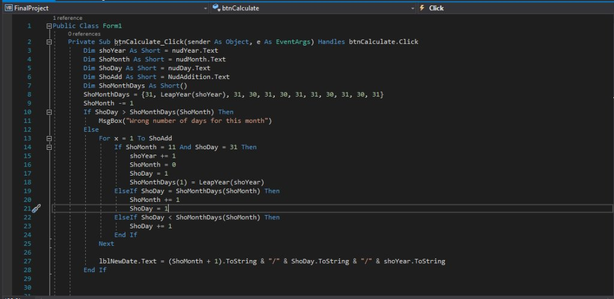
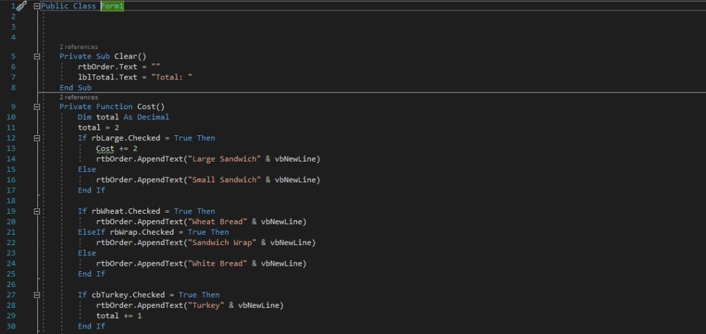

Visual Basics
SDEV 1032
Overview:
This course covers the use of Visual basic and how to use it. Throughout the program, I programmed different systems to fit different users’ needs. Visual basics is primarily used for programming apps, specifically computer apps and ensuring their proper execution. These Programs consisted of three principles, input, processing, and output. I used these three basics to create games, calculators and programs.
Coursework example:
Here are some screenshots from my final project:
Here is some of the code that’s being implemented:
Here’s another project I worked on:
And here’s some of the code that’s being implemented:
Course Reflection:
I really enjoyed using visual basics. The layout made it really easy to picture the final project and the debugging system was quick to pull up and easy to test out. It also helped me reach a much stronger understanding of looping.